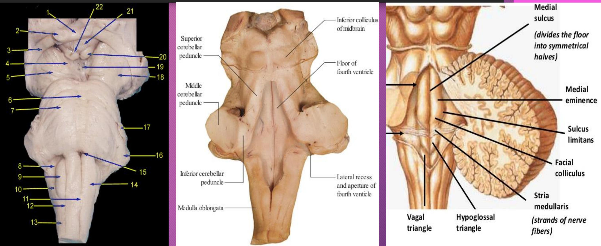
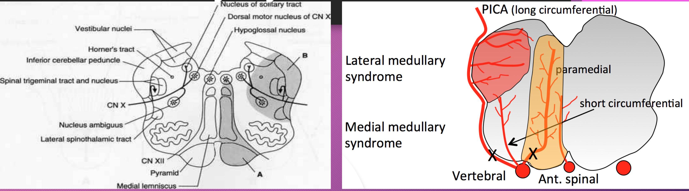

NEUROHISTOLOGY III: ORGANIZATION OF THE BRAINSTEM
EXPECTED LEARNING OUTCOMES:
- Name the parts of the brainstem
- For each part [Midbrain, Pons and Medulla oblongata], describe:
a) The external features
b) Internal features - parts/histological zones, major fiber columns, major nuclei, cranial nerve nuclei and their functional components
- Name major vascular syndromes of the brainstem and state the basis of each
- State the organization and functions of the brainstem reticular formation
Parts of the Brainstem
Midbrain - external features
Ventral midbrain:
- Crus cerebri
- Interpeduncular fossa
- Posterior perforated substance
- Oculomotor nerves
- Dorsal midbrain:
- Colliculi - superior & inferior
- Brachia - superior & inferior
- Trochlea nerves
Midbrain internal features - histological parts

Midbrain - Level of Superior Colliculus
Midbrain - Level of Inferior Colliculus
Midbrain major fibers & nuclei
Major nuclei
- Crus cerebri
- Superior cerebellar peduncle
- Lemniscal systems
- Medial longitudinal fasciculus
- Superior colliculus
- Inferior colliculus
- Pretectal nucleus
- Substantia nigra
- Red nucleus
- Periaqueductal grey
- Motor nucleus of III
- Edinger Westphal
- Trochlea nucleus
Crus cerebri
- Contains corticobulbar and corticospinal fibers
- Corticobulbar terminate in the brainstem; some are Corticonuclear
- Corticospinal terminate in the spinal cord; form the medullary pyramids
- Corticonuclear and corticospinal occupy the middle two-thirds
- Frontopontine occupy the medial sixth
- The rest (temporo-, parieto-, occipoto-pontine) occupy lateral sixth
Mesencephalic tegmentum
Lower segment
- Periaqueductal grey
- Trochlear nucleus
- Mesencephalic nucleus of the trigeminal
- Reticular formation
- Decussation of the superior cerebellar peduncles
- Medial longitudinal fasciculus
- Medial, trigeminal, lateral and spinal lemnisci
Upper segment
- Periaqueductal grey
- Oculomotor nucleus
- Red nucleus
- Mesencephalic nucleus of the trigeminal
- Reticular formation
- Medial longitudinal fasciculus
Red nucleus
- The tint appears in fresh material (ferric iron pigment in its neurons)
- Corticorubral (primary somatomotor and somatosensory areas)
- Cerebellorubral (Interposed and dentate nuclei)
- Rubrospinal tract
- Rubro-olivary
- Control of movement - encode force, velocity and direction parameters (like corticospinal)
- Primarily directs activity both during the terminal phase of a movement and preceding a movement
- Execution of learnt automated movements
Substantia nigra
- Located between crus cerebri and ascending lemniscal fibres
- Medial part traversed by oculomotor axons
- Divided into pars compacta (dorsally) and pars reticulate (ventrally)
- The pars compacta - Dopaminergic neurons;
- Provide nigrostriatal fibers, key in pathogenesis of Parkinson's disease
- Ventral tegmental system of dopaminergic neurons key in adaptive behavior
- The pars reticulata - mainly GABArgic neurons
- Receive striatonigral and subthalamonigral fibres
- Project to the ventral anterior and dorsomedial thalamic nuclei
Superior colliculus
- Laminated structure; stratum
- Zonale, cinereum, opticum & lemnisci [griseum medium, album medium, griseum profundum and album profundum]
- Zonal, superficial grey, optic, intermediate grey, deep grey, deep white and periventricular
- Afferents: Corticotectal (visual cortex), optic tract (retina) & spinotectal
- Efferents: Tectospinal (cervical segments), tectobulbar, tecto-olivary
- Function: Visual reflexes
Pretectal nucleus
- Located at the junction of the mesencephalon and diencephalon
- Afferents from:
- Optic tract (retina)
- Superior colliculus
- Efferent to Edinger-Westphal nuclei bilaterally
- Function - bilateral light reflex
Inferior colliculus
- Afferents
- Lateral lemniscus
- Auditory cortex (via medial geniculate body )
- Efferents:
- Inferior brachium to the MGB
- Inferior brachium, MGB, auditory radiation to auditory cortex
- Tectospinal & tectotegmental tracts
- Functions - Auditory reflexes, tonal discrimination & sound localization
Pons - external features
Pons - histological zones
- Basal pons & Pontine tegmentum
Ventral/Basal Pons
- Longitudinal descending fibres (corticospinal and corticobulbar)
- Scattered pontine nuclei
- Transverse and decussating pontocerebellar fibers
Cortico-ponto-cerebellar fiber system
- Corticopontine fibers
- Arise layer V of the premotor, somatosensory, posterior parietal, extrastriate visual and cingulate neocortices
- Pontine nuclei
- Scattered throughout the ventral pons
- Project to contralateral cerebellar cortex
- Pontocerebellar fibers
- From pontine nuclei
- Decussate and continue as the contralateral middle cerebellar peduncle
- End as mossy fibres in the cerebellar cortex
Pontine tegmentum
Pontine cranial nerve nuclei
- CN V to VIII**
- GSA - Trigeminal sensory nucleus (Chief/Principal, mesencephalic & spinal)
- SVE - Motor nucleus of V; Motor nucleus of VII
- GSE - Abducens nucleus
- SSA - Cochlear nuclei (dorsal &t ventral), Vestibular nuclear complex
- GVE - Salivatory (superior & inferior)
Medulla oblongata - external features

Open (upper) medulla
Closed medulla
A
Closed medulla - Level of sensory decussation (mid medulla)
A
Closed medulla - Level of motor decussation (Lower medulla) 1
A
Closed medulla - Level of motor decussation (Lower medulla) 2
Cranial nerve nuclei within the medulla

- GSE - Hypoglossal nucleus
- SVE - Nucleus ambiguous
- GVE - Motor nucleus of X (DVN)
- GVA - Nucleus of the solitary tract
- SVA - Gustatory nucleus
- SSA - Vestibular (medial & inferior)
- GSA - Spinal nucleus of V
Other nuclei within the medulla
- Nucleus gracilis and nucleus cunietus
- Inferior olivary nucleus
- Reticular nuclei (part of reticular formation)
Inferior olivary nucleus
- Olivary nuclear complex - inferior olivary, medial and dorsal accessory
- Part of precerebellar nuclei (others include pontine, vestibular)
- Afferents - both descending and ascending fibers
- Efferents - olivocerebellar via inferior cerebellar peduncle terminate on Purkinje cells as climbing fibres
Review Exercise
For the following images of the central nervous system:
a) State the specific region the slide was obtained from and give reason(s)
b) Name the structures/parts labelled
Brainstem stroke syndromes
- Occur secondary to occlusion of small perforating arteries of the posterior circulation
- Characteristic clinical picture according to the involved area
- Ipsilateral cranial nerve palsy at the affected segment
- Contralateral loss of power and sensation in the limbs
- Ipsilateral incoordination of the limbs
Midbrain syndromes
- Weber syndrome (superior alternating hemiplegia) - CN III, corticospinal
- Benedikt syndrome (paramedian midbrain syndrome) - CN III palsy, red nucleus
- Parinaud's Syndrome (dorsal midbrain syndrome, vertical gaze palsy, and Sunset Sign) - the pineal gland compresses the vertical gaze center
Pontine syndromes
- Lateral pontine syndrome (Marie-Foix syndrome) - perforating branches of the basilar and AICA corticospinal, spinothalamic tracts, cerebellar tracts, CN VII, CN VIII
- Inferior medial pontine syndrome (Foville syndrome) - paramedian branches of basilar - corticospinal, corticobulbar, medial lemniscus, middle cerebellar peduncle, abducens nerve roots
- Locked in syndrome - basilar thrombosis - ventral brainstem at the level of pons - pyramidal bundles
Medullary syndromes

- Lateral medullary syndrome (Wallenberg syndrome) - PICA - Inferior cerebellar peduncle, Vestibular nuclei, Hypothalamospinal, Spinal trigeminal nucleus, Nucleus ambiguus
- Medial medullary syndrome (Dejerine syndrome) - Pyramids, Hypoglossal nucleus,
- Hemimedullary syndrome (Babinski-Nageotte syndrome) - ipsilateral vertebral artery proximal to PICA and anterior spinal artery branches - causes lateral medullary infarct and medial medullary infarct simultaneously
Brainstem Reticular Formation
- Ill-defined collections of neuronal cell bodies (reticular nuclei) with diffuse connections (reticular fibers)
- Continuous core that traverses the whole brain stem
- Phylogenetically ancient
- Have ascending and descending components that are partly crossed and uncrossed
- Divided into three nuclear columns - median, medial & lateral
Brainstem Reticular Formation
Mar column of reticular nuclei raphe nuclei)
- Mainly serotoninergic projections
- Descending analgesic system
- Control of cardiovascular function
- Moderate limbic functions
- Cortical activation and alertness
Brainstem Reticular Formation
- Give rise to reticulospinal tracts
- Modulates spinal motor function
- Modulate segmental nociceptive input
Brainstem Reticular Formation
- Give reticulospinal fibres
- Visceral alerting responses - cardiovascular, respiratory, baroreceptor & chemoreceptor reflexes
- Modulation of nociception
- Micturition centers
THANK YOU
THANK YOU